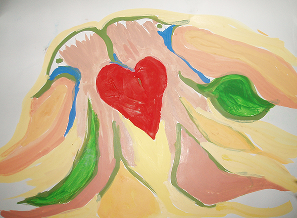

O schopnosť .Ktoru som dostal nemožno povedat dovienka ale do žívota.Prejavila sa kratka pomojej dvadsiatke.Odkedy som ju zažil prvý raz stala sa mojou vernou spoločnickou.Bolo to pri posedeni s kamaratom v pizzeri sktorym som sa zaoberal ezoterikov.V pohode sme sedeli a vychutnavajuc a čakali na jeho znameho ktorý sa mal knam mal pridat.Pri jeho prichode a podavani ruky sa tvar ktoru bežne vydite na ulici zmenila v mojich očiach na niečo nehmotne a priehladne.Pre domnov zrazu nestal človek dnešnej doby iduci s prace ale priehladny duch stredovekeho sudcu .Nechápajuc čo som práve vydel som si sadol na miesto a tvarilsa ako bi sa nič nestalo.Domov som odchadzal s otazkov co to bolo?Odpoved mi prisla az po niekolkych rokoch a mnohich podobnich volnemu oku neviditelnich obrazoch ktore vychadzali z ludi ktorich som stretol.Boli to obrazi plne farieb tvarov voni a pocitov.Neiktore ma plnily svetlom ine kusaly a palily ako zeravy kutac. Dnes uz viem ze obrazi vychadzajuce z ludi su ich sucastov a podla toho ako ich pomenovala jedna liecitelka ktoru som stretol sa volaju :Etericke pochody duše.
Tieto etericke pochody duse su v kazdom znas.Meniasa podla to ako prave vnutrone vnimane deje myslienky ludi a pocity v nasom zivote .Kazdemu znas sa menia obrazi a farbi podla sucasnej situacie a pohladu na dianie okolo seba.Ak tieto farbi a tvari pozname dostavavame sa dolepsieho kontaktu zo sebov samim.Suto take male listocky duse z indiciam z nasho podvedomia.Pomahaju nam napovedat ked sa nevieme rozhodnut a navigovat vo chvilach ktorich nechapeme dianie okolo seba.V pribehoch a obrazoch ktore som videl a zazil ti predstvim svoju schopnost ktora je tu od dnes aj pre teba.
Pri hladani odpovedi použivame rôzne cesty. Oslovime našich blizkych znamich alebo odborinikou. Ja mam ešte jednu cestu v pripade potreby chodím pre odpovede na moje otázky do šamanskeho sveta. V tomto svete navštevujem svojho majstra a silove zviera .Suto múdre duchovne bytosti ktorych znejú niekedy ako hádanka alebo otázka ale nútia človeko uvažovať. Vďaka timto úvaham sa človek posuvá ďalej. Preto tuto možnosť ponúkam aj Vám, ak budete hľadať odpoveď na vaše otázky napíšte mi ich spolu uz spomínanimi údajmi a ja sa za vas pokusim opytat majstrov na druhej strane na odpovede na vašu otázku.
Nase vnutrone obrazi sa menia tak casto ako nase problemi a ich prezivanie. Ako priklad pouzijem pribeh Jednej mojej znamej mala za muza alkoholika ktory bol sice pracovyti ale často ovladany svojov slabostou k tomuto požitku. V dnoch ked ho moja znama vydela ako usmiateho a pracovyteho cloveka jej vnutorna energia mala podobu holubice ktora sa topila v pocitoch radosti. No keď prišla manželova alkoholicka chvila zmenilo sa jej vnútro na cloveko topiaceho sa v bahne. Casto sa menil jej pohlad a farby v momentoch ked sa ho snazila opustit raz bola srnka v okovach a raz žena vyzliekajuca si šaty ktorá vstupovala do jazera plneho bielej energie .Pri uvažovani nad problemon sa jej obrazi menily na strom v ktorom bol pichnuty klin s ktoreho vitekala zivica. Dnes ma tato zena podou vetra lietajuceho na lukach . Dufam ze jej pocit slobodi prinesie dalsie radosti.
